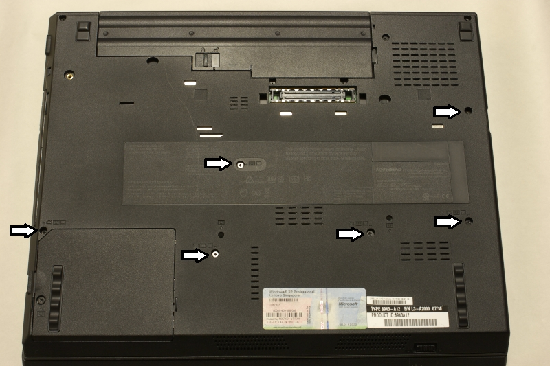
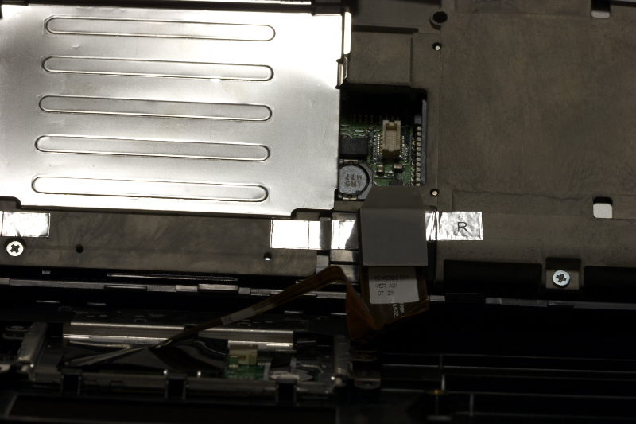
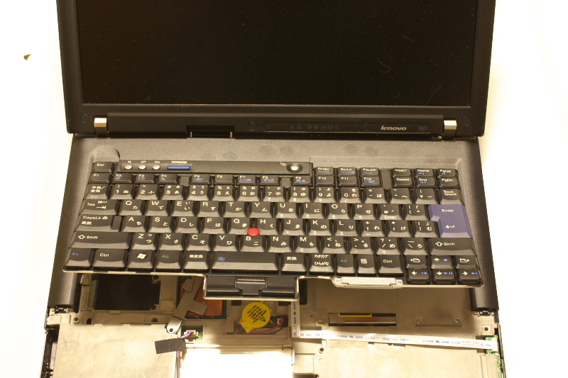
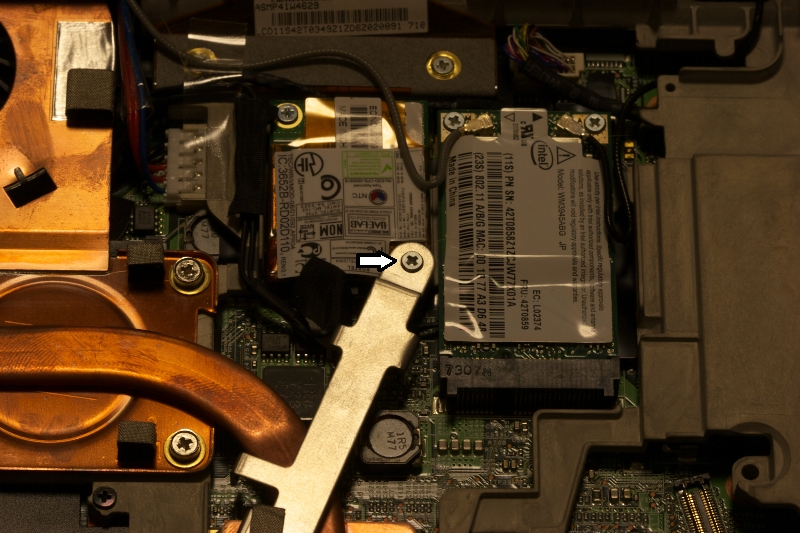
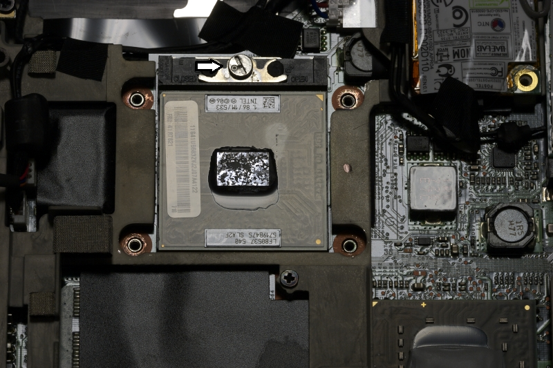
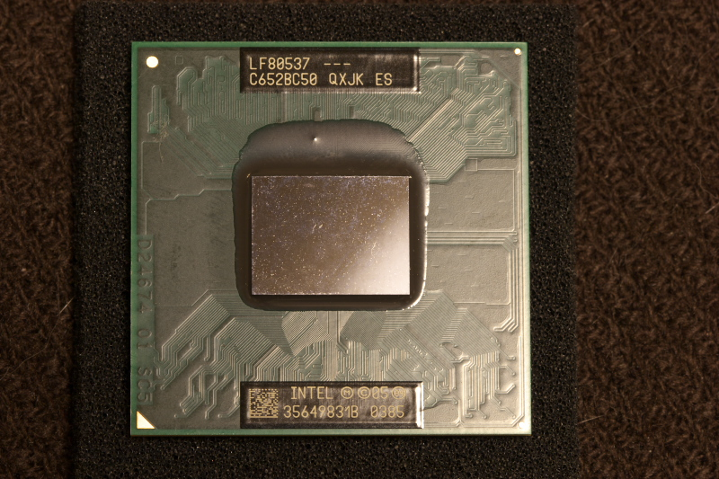

電池を外し、矢印のついた部分のネジを外します。ネジは無くさないように皿にでも入れておきましょう。
最後のノーマルスクリーンモデル、ThinkPad R61 8943-A12を買ってきたので、早速CPUをCerelon 540からCore 2 Duo T7500に換装してみました。
ここの内容は、基本的に保守マニュアルに掲載されている内容を参考にすれば、誰にでも可能ですが、ここに書かれている内容については無保証です。うまくいかなくても何ら保証しませんので、自己責任でお願いします。

矢印のついた部分のネジを外します。
電池を外し、矢印のついた部分のネジを外します。ネジは無くさないように皿にでも入れておきましょう。

パームレストは、奥を手前に持ち上げるようにして外します。


ケーブルは外した方が作業はし易いですが、付けたままでも大丈夫です。ちなみに、この銀のパネルを開けるとメモリが交換できます。今回は開ける必要はありません。

キーボードは、手前から持ち上げるようにして外します。

ヒートシンクの止めネジを外します。

上部のカバーは手前を持ち上げるようにして外します。

ヒートシンクの4つのネジを外します。

CPUのおでましです。ソケット上部のネジをマイナスドライバで回します(確か時計回り)。

ゼロプレッシャソケットなので、あとは簡単に外れます。

今回オークションでゲットしたT7500。あとは逆の手順で組み上げれば完成。パームレストが、閉まっているようで、隙間があいていたりするので、念入りにおさえつけて、隙間ができないようにします。
ご感想をお聞かせください(ruimo@ruimo.com)。なお、誠に勝手ながら、HTMLメールはサーバーで全て削除されますので、テキストメールでお願いいたします。